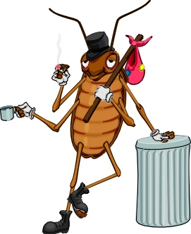

Hamamböcekleri
...hakkýnda bilmek isteyeceðiniz her þey
 Genellikle
geceleri aktif olan bu böcekler ýþýða karþý hassastýrlar. Antenleri çok küçük
miktarlardaki nem ve yiyeceði tespit edebilir. Karýnlarýnýn arka tarafýndan uzanan
duyargalarý çok hafif hava akýmlarýna bile duyarlýdýr; öyle ki, potansiyel bir
tehlikeden saniyenin binde 54'ü gibi bir zamanda kaçmaya baþlayabilirler.
Genellikle
geceleri aktif olan bu böcekler ýþýða karþý hassastýrlar. Antenleri çok küçük
miktarlardaki nem ve yiyeceði tespit edebilir. Karýnlarýnýn arka tarafýndan uzanan
duyargalarý çok hafif hava akýmlarýna bile duyarlýdýr; öyle ki, potansiyel bir
tehlikeden saniyenin binde 54'ü gibi bir zamanda kaçmaya baþlayabilirler.
Sayýlarý
itibariyle ekosistemin önemli bir parçasý olan bu böcekler, baðýrsaklarýndaki
protozoa ve bakteriler yüzünden hemcinsleri de dahil olmak üzere bir çok þeyi
yiyebilirler. Bu sebeple de ormanlardaki çör-çöp ve diðer hayvanlarýn
artýklarýnýn yeniden tabiata dönmelerini hýzlandýrýrlar. Bu arada kendileri de bir
çok hayvana, hatta bazen insanlara yiyecek olurlar.
Evlerde
yaþayanlarýn hastalýk vektörleri olduðu iddiasý kanýtlanamamýþtýr.
Isýrmadýklarý
ve sokmadýklarý için bakýmlarý kolay, kullanýmlarý güvenli ideal laboratuar
hayvanýdýrlar.
Hýzlý
üremeleri, ortalýðý kirletmeleri, kötü kokularý ve en azýndan potansiyel hastalýk
taþýyýcýlarý olduklarý için bir çok böcek kýrýcý ilaca maruz tutulduklarý
halde bunlarýn bir kýsmýna adapte olmayý baþarmýþlardýr.
Kanlarý
beyazdýr.
Bazý
türleri kanatlýdýr, fakat uçmaktan ziyade yürümeyi tercih ederler.
Dünyanýn en
büyük hamamböceði Güney Amerika’da yaþar ve yaklaþýk 15 cm uzunluðunda olup iki
kanat arasý uzunluðu da 30 cm civarýndadýr.
Ýskeletleri
vücutlarýnýn dýþýndadýr. Yýlda birkaç defa iskelet, yani kabuk deðiþtirirler.
Kabuðunu yeni deðiþtirmiþ bir hamamböceðinin rengi beyaz, göz kýsmý siyahtýr.
Kabuk 8 saat sonra normal rengini kazanýr.
Bazý
türlerde diþiler sadece bir defa çiftleþir ve bu onlara ömürleri boyunca yeter.
Kafasý
kopmuþ bir hamamböceði 1 hafta daha yaþayabilir. Sonuçta aðzý olmadýðýndan su
içemediði için susuzluktan ölür.
Yüzebilirler,
ama aðýz veya burunlarý ile deðil de yanlarýndan nefes aldýklarý için su yüzeyine
doðru yüzerken çok zorlanýrlar.
Saatte 4.800
m kadar koþabilirler, maraton rekoru olmasa da boylarýna göre çok çok iyi.
Hamamböcekleri
hakkýnda bazý sayýlar:
- 6 ayaklarý vardýr.
- Bir çoðunda 18 eklem bulunur.
- 40 dakika boyunca nefeslerini tutabilirler.
- Hayatlarýnýn % 75 ini dinlenerek geçirirler, bu günde 18
saat demek olur ki, bayaðý tembel olduklarý anlamýna geliyor.
- Dünya üzerindeki türlerinin sayýsý 5000 civarýndadýr.
- Yaklaþýk 320 milyon yýl önce, karbonifer çaðda ortaya
çýkmýþlardýr ve bu güne kadar görünüþleri çok az deðiþmiþtir.
Aðýzlarý
saða-sola doðru hareket eder.
Yiyeceksiz 1
ay, ancak susuz 1 hafta yaþayabilirler.
Kalbi
basitçe valflý bir tüten ibarettir. Tüp kaný ileri ve geri pompalayabilir. Kalp
böceðe hiçbir zarar vermeden durabilir de.
Yavru
hamamböcekleri milimetrenin yarýsý kadar bir deliðe sýðabilir. Yetiþkin erkekler
1.5 mm, hamile diþiler de 4,5 mm büyüklüðündeki aralýklara sýðabilirler.
Dünya
üzerinde her yerde bulunurlar. Türlerinin çoðu tropiklerde yaþar, ancak Kuzey ve
Güney Kutuplarýnda da yaþayabilirler. -32 dereceye kadar dayanabilirler.
Ayaklarýndaki
pençeleri sayesinde duvarlara týrmanýrlar.
Koku alma
duyularý o kadar geliþmiþtir ki ev halkýný misafirlerden ayýrt edebilirler.
Diþiler
feromon denilen bir tür koku salgýlayarak erkekleri davet ederler.
Hamamböceklerinin zor koþullara dayanýklýlýðýný
ölçen çalýþmalar:
Jason L. Maron, Department of Physics, California Institute
of Technology
 Bu deneyler minimum bilimsel
kesinlikle yapýldý. Ayný hamamböceðini bir daha kullanma imkaný olmadýðýndan hiç
bir kontrol yoktu. Bu da bir referans hamamböceði tanýmlamanýn gerekliliðini
kanýtlýyor.
Aslýnda deneyler özellikle hamamböcekleri üzerinde
kurulmamýþtý, ancak bir deney yapýlýrken her yerde olduðu kadar laboratuarlarda da
bulunan bir hamamböceði, istemeden de olsa, deneyin bir parçasý oldu.
- Sývý Azotta Dondurma:
- Öldü.
- Yaþamýný sürdürebileceði en düþük sýcaklýk
belirlenemedi.
- Havasýz Býrakma:
- Hava boþaltýlýrken þiddetle titredi, sonra hareketsiz
kaldý. Vakum 10 dakika boyunca uygulandý. Tekrar havaya çýkarýldýðýnda yavaþ
yavaþ canlandý ve 2 dakika sonra normale döndü.
- Maksimum vakum zamaný belirlenemedi.
- Radyasyon:
- 40 kW gücünde ve dönen bir anot kaynaðýndan üretilen
X-ýþýnlarýna uzun süre maruz kalmýþ hamamböceklerinin yaþamaya devam ettikleri
biliniyor. Kýyaslama için söylemek gerekirse insan vücudunun buna 1 saniye bile maruz
kalmasý ölüm nedenidir.
- Brookhaven Ulusal Laboratuarýndaki synchrotronun ürettiði
10 keV X-ýþýnýna maruz kalan bir hamamböceði öldü. Buradaki synchrotron demetinin
yoðunluðu dönen bir anot kaynaðýndan üretilen demetin yoðunluðundan yaklaþýk
1000 kat büyüktü.
- Radyasyona maruz kalmanýn kesin limiti belirlenemedi.
- 12 Molar HCl e Batýrýlma:
- 30 saniyede öldü.
- 12 Molar NaOH e Batýrýlma:
- 30 saniyede öldü.
- Suya Batýrýlma:
- Suya batýrýldýktan 10 dakika sonra dýþarý çýkarýlan
böcek yaþamaya devam etti.
- Maksimum suda kalma süresi belirlenemedi.
- 20 Atmosfer Hava Basýncý Uygulama:
- Görünür hiçbir etki olmadý.
- Maksimum basýnç belirlenemedi.
- 100 Derece Sýcaklýktaki Fýrýna Koyma:
- Ölmesi çok uzun sürdü.
- Termal etkiye maruz kalma sýnýrý belirlenemedi.
- Ayakkabý ve Taban Arasýnda Ezilme:
- Dýþ iskeleti ezmek için yaklaþýk 29.4 N kuvvet gerekti.
Bu, ezme noktasý olarak biliniyor.
- Santrifüj:
- Hamamböceðinin maksimum santrifüj kapasitesi
belirlenemedi. Ayakkabý ile ezme deneyindeki sonuçtan bir tahmin yapýlabilir.
- Sapanla Duvara Atma:
- Bu deney hamamböceðinin ani yavaþlama travma sýnýrýný
ölçecekti ve sonucun ezme noktasýndan epey büyük çýkmasý bekleniyordu. Bu deney
yapýlmadý.
- Mikrodalga:
- 1 dakika boyunca hiçbir etki gözlenmedi.
- Hamamböceðinin maksimum mikrodalga kapasitesi
belirlenemedi.
- Böcek kýran Spreyi:
- Öldü.
- Patlama:
- Patlama sýrasýnda bir M60 tan 1 cm uzakta bulunan bir
hamamböceði yaþamaya devam etti.
- Uzatýlma Dayanýklýlýðý:
- Belirlenemedi.
- Cýva:
- 30 derecedeki cýva buharý basýncýna uzun süre maruz
býrakýlan hamamböceðinin yaþayýp yaþayamayacaðý belirlenemedi.
- Elektroþok:
- Bu deneyler yapýlmadý.